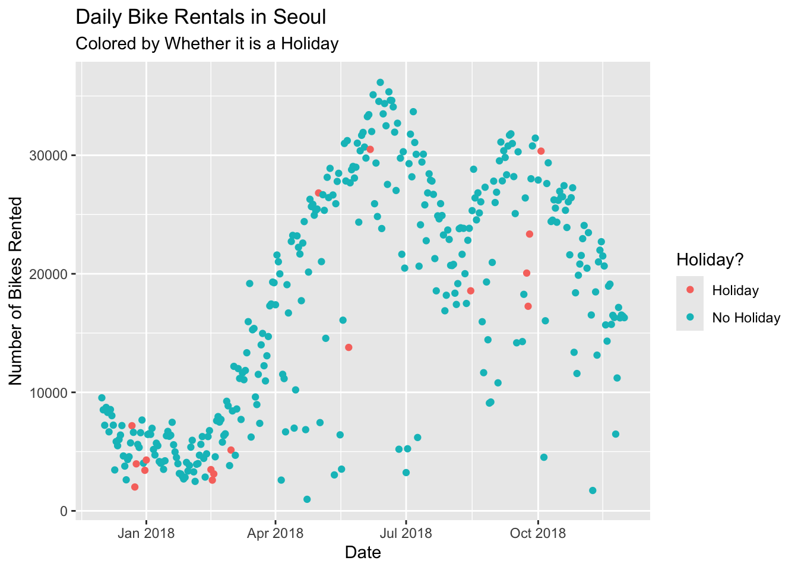
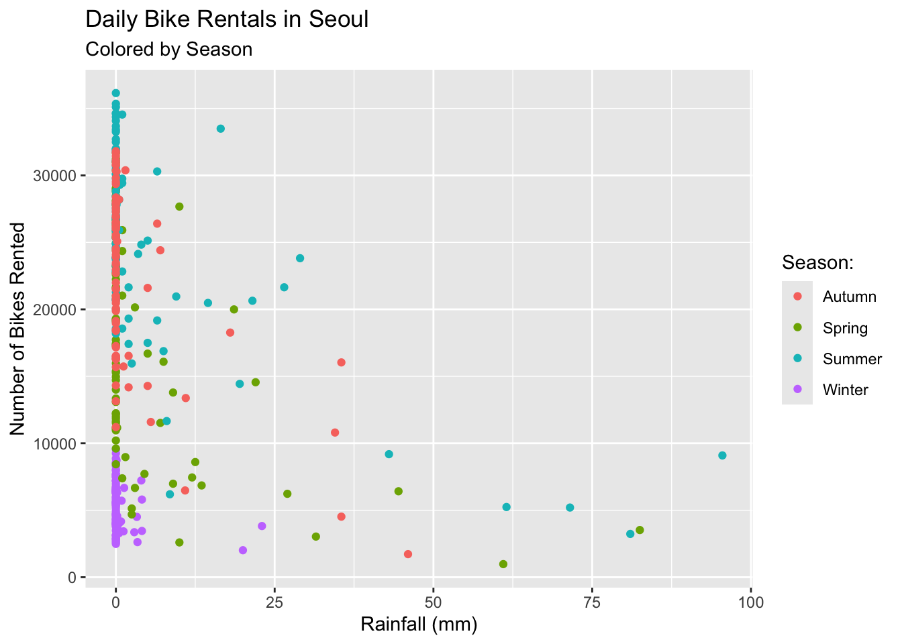
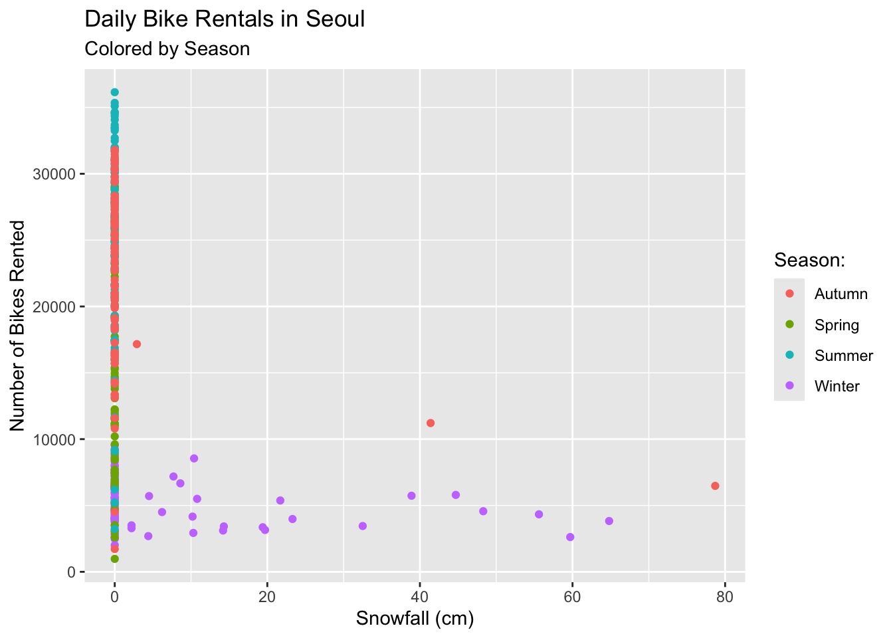
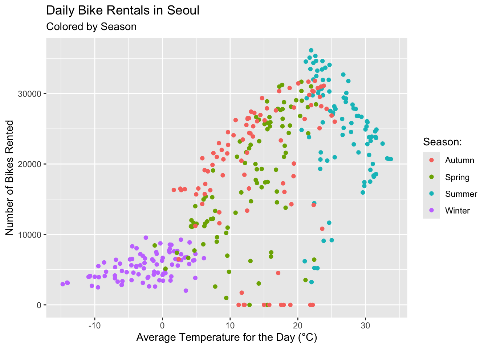
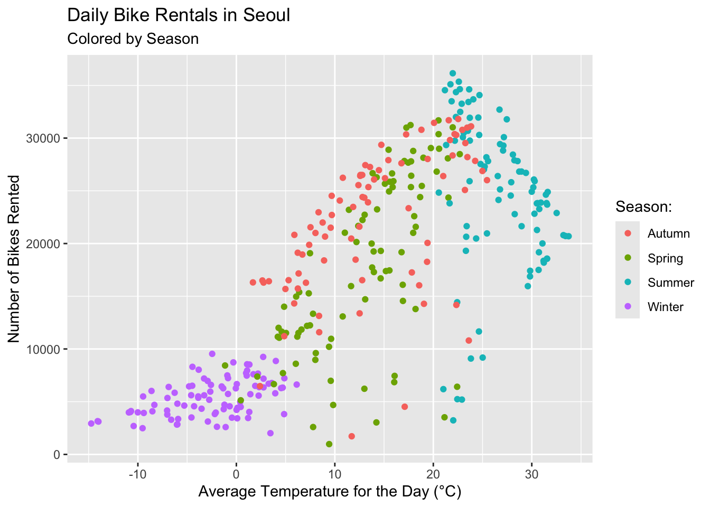
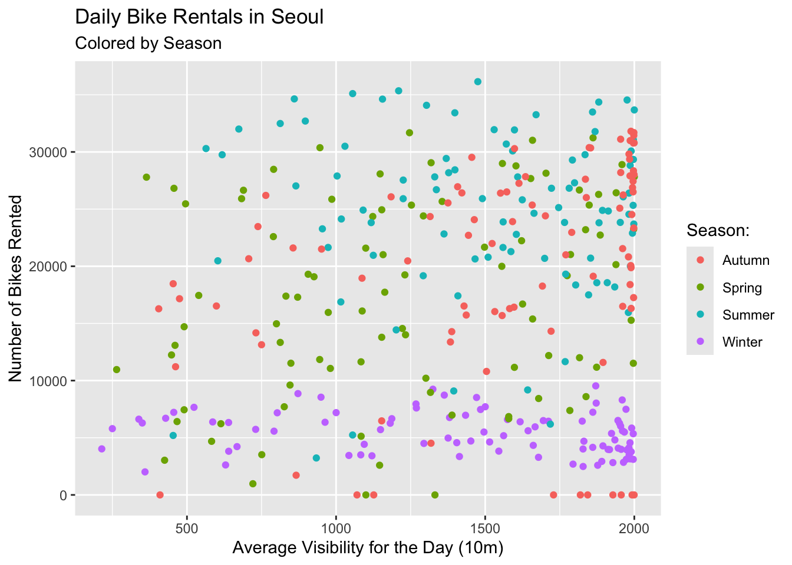
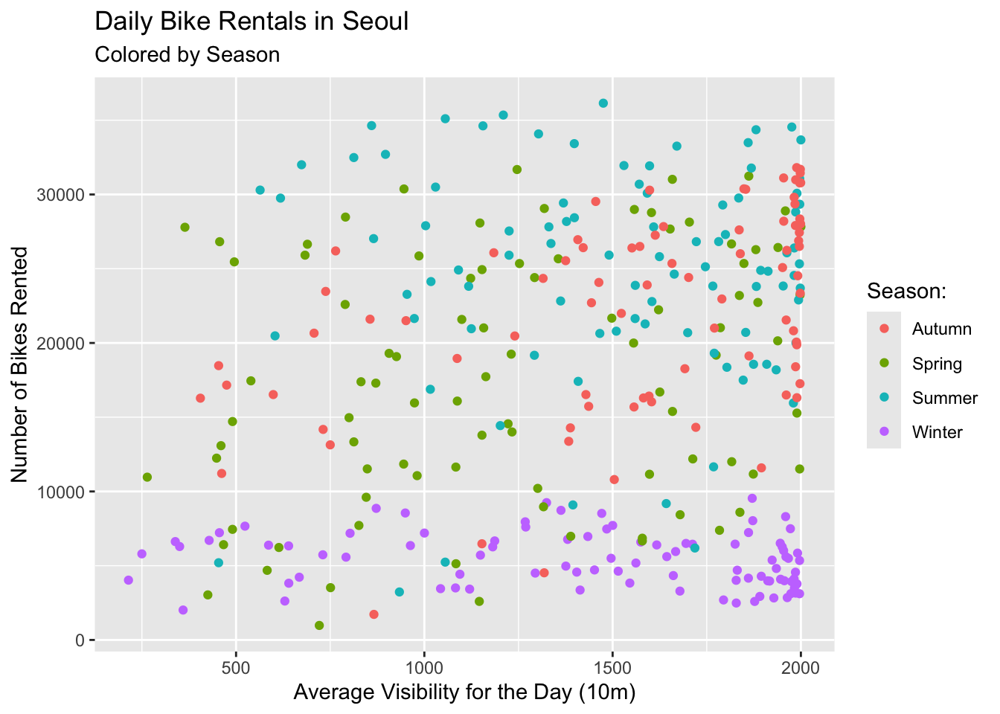

# read in the Seoul Bike Databike_data <-read_csv("SeoulBikeData.csv", locale=locale(encoding="latin1"))
Rows: 8760 Columns: 14
── Column specification ────────────────────────────────────────────────────────
Delimiter: ","
chr (4): Date, Seasons, Holiday, Functioning Day
dbl (10): Rented Bike Count, Hour, Temperature(°C), Humidity(%), Wind speed ...
ℹ Use `spec()` to retrieve the full column specification for this data.
ℹ Specify the column types or set `show_col_types = FALSE` to quiet this message.
# check for missing valuescolSums(is.na(bike_data))
Date Rented Bike Count Hour
0 0 0
Temperature(°C) Humidity(%) Wind speed (m/s)
0 0 0
Visibility (10m) Dew point temperature(°C) Solar Radiation (MJ/m2)
0 0 0
Rainfall(mm) Snowfall (cm) Seasons
0 0 0
Holiday Functioning Day
0 0
The above code reads in the data, and then checks to see how many missing observation are in each column of our data. Luckily, there are no missing observations in any of our columns!
# check the column types and column valuesstr(bike_data)
The str() function allows us the examine the structure of our data. Here we can see which of our variables are numeric, and which ones are character. We can see the first few observations of each column, so we know whether the values makes sense in context, and we see the number of observations in each column, which is 8760 for every variable in our data set.
# basic summaru stats of numeric variablesmean(bike_data$`Rented Bike Count`)
[1] 704.6021
sd(bike_data$`Rented Bike Count`)
[1] 644.9975
The mean number of rented bikes per hour in Seoul in 2018 was 704.6021. The standard deviation of this mean is 644.9975.
mean(bike_data$Hour)
[1] 11.5
sd(bike_data$Hour)
[1] 6.922582
The mean of our hour variable is 11.5. The standard deviation is 6.922582. These number are not very useful in context.
mean(bike_data$`Temperature(°C)`)
[1] 12.88292
sd(bike_data$`Temperature(°C)`)
[1] 11.94483
The mean hourly temperature in Seoul in 2018 was 12.88292°C, with a standard deviation of 11.94483°C.
mean(bike_data$`Humidity(%)`)
[1] 58.22626
sd(bike_data$`Humidity(%)`)
[1] 20.36241
The mean hourly humidity in Seoul in 2018 was 58.22626%, with a standard deviation of 20.36241%.
mean(bike_data$`Visibility (10m)`)
[1] 1436.826
sd(bike_data$`Visibility (10m)`)
[1] 608.2987
The mean hourly visibility in Seoul in 2018 was 14368.26 meters, with a standard deviation of 6082.987 meters.
mean(bike_data$`Dew point temperature(°C)`)
[1] 4.073813
sd(bike_data$`Dew point temperature(°C)`)
[1] 13.06037
The mean hourly dew point temperature in Seoul in 2018 was 4.073813°C, with a standard deviation of 13.06037°C.
mean(bike_data$`Solar Radiation (MJ/m2)`)
[1] 0.5691107
sd(bike_data$`Solar Radiation (MJ/m2)`)
[1] 0.8687462
The mean hourly solar radiation level in Seoul in 2018 was 0.5691107 MJ/m2, with a standard deviation of 0.8687462 MJ/m2.
mean(bike_data$`Rainfall(mm)`)
[1] 0.1486872
sd(bike_data$`Rainfall(mm)`)
[1] 1.128193
The mean hourly rainfall in Seoul in 2018 was 0.1486872mm, with a standard deviation of 1.128193mm.
mean(bike_data$`Snowfall (cm)`)
[1] 0.07506849
sd(bike_data$`Snowfall (cm)`)
[1] 0.4367462
The mean hourly snowfall in Seoul in 2018 was 0.07506849cm, with a standard deviation of 0.4367462cm.
# check unique levels of categorical variablesunique(bike_data$Seasons)
[1] "Winter" "Spring" "Summer" "Autumn"
unique(bike_data$Holiday)
[1] "No Holiday" "Holiday"
unique(bike_data$`Functioning Day`)
[1] "Yes" "No"
# convert to Date variable to date type using lubridate packagebike_data <- bike_data |>mutate(date =dmy(Date)) |>select(-Date)# convert character variables to factorsbike_data <- bike_data |>mutate(season =as.factor(Seasons),holiday =as.factor(Holiday),functioning_day =as.factor(`Functioning Day`) ) |>select(-c(Seasons, Holiday, `Functioning Day`))# rename column names that need to be fixedbike_data |>names()
The above code makes the bike rental data easier to work with in several. When the data was read in, Date was included as a character variable, but after using the dmy() function from the lubridate package, the date variable (now lowercase) is of the date data type. After looking at the unique levels of each other character variable, the remaining character variables have been stored as factors, with their names updated to be more compatible with R.
All the numeric variables also had their names updated, so now every variable in our data set has lower, snake-case variable names.
# summary stats across categorical variables (especially for rented bike count)# mean and standard deviation of bikes rented per hour grouped by seasonbike_data |>group_by(season) |>summarize(mean_rentals =mean(bike_count),sd_rentals =sd(bike_count) )
# A tibble: 4 × 3
season mean_rentals sd_rentals
<fct> <dbl> <dbl>
1 Autumn 820. 651.
2 Spring 730. 622.
3 Summer 1034. 690.
4 Winter 226. 150.
The above table gives us the mean and standard deviation of hourly bike rentals in Seoul in 2018, grouped by the season.
# mean and standard deviation of bikes rented per hour grouped by whether is it a holiday or notbike_data |>group_by(holiday) |>summarize(mean_rentals =mean(bike_count),sd_rentals =sd(bike_count) )
The above table gives us the mean and standard deviation of hourly bike rentals in Seoul in 2018, grouped by whether it is a holiday.
# mean and standard deviation of bikes rented per hour grouped by whether the bike rental place is available (will be mean and sd 0 when non-functional hours)bike_data |>group_by(functioning_day) |>summarize(mean_rentals =mean(bike_count),sd_rentals =sd(bike_count) )
# A tibble: 2 × 3
functioning_day mean_rentals sd_rentals
<fct> <dbl> <dbl>
1 No 0 0
2 Yes 729. 642.
The above table gives us the mean and standard deviation of hourly bike rentals in Seoul in 2018, grouped by whether it is functioning hours. During non-functioning hours, it makes sense that there are no bike rentals to observe. Because of this, we will subset our data to only include results where functioning_day is “Yes”.
# number of observations before subsetnrow(bike_data)
[1] 8760
# subset the data to only include observations where functioning_day is "Yes"bike_data <- bike_data |>filter(functioning_day =="Yes")# number of observations after subsetnrow(bike_data)
[1] 8465
# # mean and standard deviation of bikes rented per hour grouped by season and whether it is a holidaybike_data |>group_by(season, holiday) |>summarize(mean_rentals =mean(bike_count),sd_rentals =sd(bike_count) )
`summarise()` has grouped output by 'season'. You can override using the
`.groups` argument.
# A tibble: 8 × 4
# Groups: season [4]
season holiday mean_rentals sd_rentals
<fct> <fct> <dbl> <dbl>
1 Autumn Holiday 948. 603.
2 Autumn No Holiday 923. 618.
3 Spring Holiday 635. 609.
4 Spring No Holiday 750. 619.
5 Summer Holiday 1022. 564.
6 Summer No Holiday 1034. 693.
7 Winter Holiday 157. 108.
8 Winter No Holiday 232. 152.
The above table gives us the mean and standard deviation of hourly bike rentals in Seoul in 2018, grouped by both the season and whether it is a holiday.
Note: This is now after we have subsetted based on the functioning_day variable
# summarize across days, so there is only one observation for each daybike_data <- bike_data |>group_by(date, season, holiday) |>summarize(bike_count =sum(bike_count),rainfall =sum(rainfall),snowfall =sum(snowfall),mean_temp =mean(temperature),mean_humidity =mean(humidity),mean_wind_speed =mean(wind_speed),mean_visibility =mean(visibility),mean_dew_point =mean(dew_point_temp),mean_solar_rad =mean(solar_radiation) )
`summarise()` has grouped output by 'date', 'season'. You can override using
the `.groups` argument.
The above code summarizes across days, so bike_data now stores daily bike rental data instead of hourly data. bike_count, rainfall, and snowfall now store the daily totals instead of hourly totals. All the other numeric variables tracking the weather store daily averages.
# recreate above summary stats# mean and standard deviation of bikes rented per day grouped by seasonbike_data |>group_by(season) |>summarize(mean_rentals =mean(bike_count),sd_rentals =sd(bike_count) )
# A tibble: 4 × 3
season mean_rentals sd_rentals
<fct> <dbl> <dbl>
1 Autumn 22099. 6711.
2 Spring 17910. 8357.
3 Summer 24818. 7297.
4 Winter 5413. 1808.
The above table gives us the mean and standard deviation of daily bike rentals in Seoul in 2018, grouped by the season.
# mean and standard deviation of bikes rented per day grouped by whether is it a holiday or notbike_data |>group_by(holiday) |>summarize(mean_rentals =mean(bike_count),sd_rentals =sd(bike_count) )
The above table gives us the mean and standard deviation of daily bike rentals in Seoul in 2018, grouped by whether it is a holiday.
# # mean and standard deviation of bikes rented per day grouped by season and whether it is a holidaybike_data |>group_by(season, holiday) |>summarize(mean_rentals =mean(bike_count),sd_rentals =sd(bike_count) )
`summarise()` has grouped output by 'season'. You can override using the
`.groups` argument.
# A tibble: 8 × 4
# Groups: season [4]
season holiday mean_rentals sd_rentals
<fct> <fct> <dbl> <dbl>
1 Autumn Holiday 22754. 5642.
2 Autumn No Holiday 22065. 6792.
3 Spring Holiday 15247. 10917.
4 Spring No Holiday 18002. 8322.
5 Summer Holiday 24532. 8438.
6 Summer No Holiday 24824. 7324.
7 Winter Holiday 3759 1561.
8 Winter No Holiday 5574. 1757.
The above table gives us the mean and standard deviation of hourly bike rentals in Seoul in 2018, grouped by both the season and whether it is a holiday.
# plot the data to explore relationships# plot rented bikes by day, grouped by holidayggplot(data = bike_data, aes(x = date, y = bike_count, colour = holiday)) +geom_point() +labs(title ="Daily Bike Rentals in Seoul",subtitle ="Colored by Whether it is a Holiday",x ="Date",y ="Number of Bikes Rented" ) +scale_color_discrete(name ="Holiday?")

The above scatter plot shows how many bikes were rented per day in Seoul in 2018, with the points colored by whether the day was a holiday.
# plot rented bikes by rainfall, grouped by seasonggplot(data = bike_data, aes(x = rainfall, y = bike_count, colour = season)) +geom_point() +labs(title ="Daily Bike Rentals in Seoul",subtitle ="Colored by Season",x ="Rainfall (mm)",y ="Number of Bikes Rented" ) +scale_color_discrete(name ="Season:")

The above scatter plot shows how many bikes were rented in day based on the total rainfall that day. The points are colored by the season of the day. It makes sense that many of the points are at 0 on the x-axis, as many days have no rain at all.
# plot rented bikes by snowfall, grouped by seasonggplot(data = bike_data, aes(x = snowfall, y = bike_count, colour = season)) +geom_point() +labs(title ="Daily Bike Rentals in Seoul",subtitle ="Colored by Season",x ="Snowfall (cm)",y ="Number of Bikes Rented" ) +scale_color_discrete(name ="Season:")

The above scatter plot shows how many bikes were rented in day based on the total snowfall that day. The points are colored by the season of the day. It makes sense that many of the points are at 0 on the x-axis, as many days have no snow at all. All of the points not at 0 on the x-axis are in the Autumn or Winter, with the majority in the Winter, which makes sense as these are the coldest months in the Northern Hemisphere.
# plot rented bikes by humidity, grouped by seasonggplot(data = bike_data, aes(x = mean_humidity, y = bike_count, colour = season)) +geom_point() +labs(title ="Daily Bike Rentals in Seoul",subtitle ="Colored by Season",x ="Average Humidity for the Day (%)",y ="Number of Bikes Rented" ) +scale_color_discrete(name ="Season:")

The above scatter plot shows how many bikes were rented in day based on the average humidity that day. The points are colored by the season of the day.
# plot rented bikes by temperature, grouped by seasonggplot(data = bike_data, aes(x = mean_temp, y = bike_count, colour = season)) +geom_point() +labs(title ="Daily Bike Rentals in Seoul",subtitle ="Colored by Season",x ="Average Temperature for the Day (°C)",y ="Number of Bikes Rented" ) +scale_color_discrete(name ="Season:")

The above scatter plot shows how many bikes were rented in day based on the average temperature that day. The points are colored by the season of the day. It appears the there is a positive correlation between temperature and daily bike rentals, possibly because people are more likely to want to do outdoor activities like ride a bike when it is warmer outside. However, there may be some non-linear effect, where when the temperature gets too high, the number of bike rentals goes down, as people feel it is too hot.
# plot rented bikes by solar radiation, grouped by seasonggplot(data = bike_data, aes(x = mean_solar_rad, y = bike_count, colour = season)) +geom_point() +labs(title ="Daily Bike Rentals in Seoul",subtitle ="Colored by Season",x ="Average Solar Radiation for the Day (MJ/m2)",y ="Number of Bikes Rented" ) +scale_color_discrete(name ="Season:")

The above scatter plot shows how many bikes were rented in day based on the average solar radiation that day. The points are colored by the season of the day. It appears the there is a positive correlation between solar radiation and daily bike rentals, possibly because people are more likely to want to do outdoor activities like ride a bike when it is sunny outside.
# plot rented bikes by visibility, grouped by seasonggplot(data = bike_data, aes(x = mean_visibility, y = bike_count, colour = season)) +geom_point() +labs(title ="Daily Bike Rentals in Seoul",subtitle ="Colored by Season",x ="Average Visibility for the Day (10m)",y ="Number of Bikes Rented" ) +scale_color_discrete(name ="Season:")

The above scatter plot shows how many bikes were rented in day based on the average visibility that day. The points are colored by the season of the day.
# report correlations for all the numeric variables in the datacor(bike_data |>ungroup() |>select(where(is.numeric)), method ="pearson")
The above table is a correlation matrix of all the numeric variables in our data set. The most important row and column concerning bike rentals is the first row and first column (which give the same information). This row/column tells us the direction and strength of the linear relationships between daily bike rentals in Seoul and the other numeric variables in our relationship. Positive numbers indicate a positive relationship, while negative numbers indicate a negative, or inverse, relationship. The closer to 1 or -1, the stronger the linear relationship is. The closer to 0, the weaker the linear relationship is.
Split the Data
# set seed so the results are replicableset.seed(2824)# split the data into a 75/25 training/test split, stratify the split by seasonsbike_split <-initial_split(bike_data, prop =0.75, strata = season)# save the 75% split as trainingbike_train <-training(bike_split)# save the 25% split as testingbike_test <-testing(bike_split)# view the training and testing setsbike_train
# A tibble: 263 × 12
# Groups: date, season [263]
date season holiday bike_count rainfall snowfall mean_temp
<date> <fct> <fct> <dbl> <dbl> <dbl> <dbl>
1 2018-09-01 Autumn No Holiday 26010 0 0 25.5
2 2018-09-02 Autumn No Holiday 26881 0 0 25.0
3 2018-09-03 Autumn No Holiday 10802 34.5 0 23.6
4 2018-09-05 Autumn No Holiday 31114 0 0 23.8
5 2018-09-08 Autumn No Holiday 29813 0 0 21.7
6 2018-09-09 Autumn No Holiday 28354 0 0 22.0
7 2018-09-11 Autumn No Holiday 31694 0 0 21.6
8 2018-09-12 Autumn No Holiday 31809 0 0 22.5
9 2018-09-13 Autumn No Holiday 30991 0 0 23.4
10 2018-09-14 Autumn No Holiday 28199 0.5 0 23.5
# ℹ 253 more rows
# ℹ 5 more variables: mean_humidity <dbl>, mean_wind_speed <dbl>,
# mean_visibility <dbl>, mean_dew_point <dbl>, mean_solar_rad <dbl>
Above, we can see the heads of our training and test data sets. Using the tidymodels package, we split 75% of our bike rental data into the training set, which we will use to train our models, and the remaining 25% of the data makes up the test set, which will be used to test how effective our models are. The split was stratified by the season variable, so each data set will include a proportional number of observations from each season. Our training data set has 263 observations, while our test data set has 90
# want to create a 10 fold CV split on our training data# create a function to do so (same as in notes from github pages)get_cv_splits <-function(data, num_folds){#get fold size size_fold <-floor(nrow(data)/num_folds)#get random indices to subset the data with random_indices <-sample(1:nrow(data), size =nrow(data), replace =FALSE)#create a list to save our folds in folds <-list()#now cycle through our random indices vector and take the appropriate observations to each foldfor(i in1:num_folds){if (i < num_folds) { fold_index <-seq(from = (i-1)*size_fold +1, to = i*size_fold, by =1) folds[[i]] <- data[random_indices[fold_index], ] } else { fold_index <-seq(from = (i-1)*size_fold +1, to =length(random_indices), by =1) folds[[i]] <- data[random_indices[fold_index], ] } }return(folds)}# save the results in foldsfolds <-get_cv_splits(bike_train, 10)# view the 10 fold CVfolds
[[1]]
# A tibble: 26 × 12
# Groups: date, season [26]
date season holiday bike_count rainfall snowfall mean_temp
<date> <fct> <fct> <dbl> <dbl> <dbl> <dbl>
1 2018-03-29 Spring No Holiday 17450 0 0 15.5
2 2018-05-23 Spring No Holiday 27674 10 0 17.5
3 2018-01-19 Winter No Holiday 7472 0 0 1.05
4 2018-03-13 Spring No Holiday 15963 0 0 11.6
5 2018-04-01 Spring No Holiday 17388 0 0 15.2
6 2018-04-09 Spring No Holiday 19082 0 0 7.48
7 2017-12-12 Winter No Holiday 5496 0 0 -9.47
8 2018-01-09 Winter No Holiday 5500 0 10.8 -3.87
9 2017-12-16 Winter No Holiday 4632 0 0 -5.29
10 2018-09-03 Autumn No Holiday 10802 34.5 0 23.6
# ℹ 16 more rows
# ℹ 5 more variables: mean_humidity <dbl>, mean_wind_speed <dbl>,
# mean_visibility <dbl>, mean_dew_point <dbl>, mean_solar_rad <dbl>
[[2]]
# A tibble: 26 × 12
# Groups: date, season [26]
date season holiday bike_count rainfall snowfall mean_temp
<date> <fct> <fct> <dbl> <dbl> <dbl> <dbl>
1 2018-08-26 Summer No Holiday 19310 2 0 23.3
2 2018-03-12 Spring No Holiday 13339 0 0 7.79
3 2018-09-27 Autumn No Holiday 30789 0 0 18.8
4 2018-01-24 Winter No Holiday 3154 0 19.7 -14.1
5 2018-07-01 Summer No Holiday 3231 81 0 22.0
6 2018-03-19 Spring No Holiday 8968 1.5 0 8.02
7 2018-09-02 Autumn No Holiday 26881 0 0 25.0
8 2018-03-27 Spring No Holiday 14710 0 0 13.1
9 2018-06-27 Summer No Holiday 29755 1 0 22.2
10 2018-03-06 Spring No Holiday 12003 0 0 4.29
# ℹ 16 more rows
# ℹ 5 more variables: mean_humidity <dbl>, mean_wind_speed <dbl>,
# mean_visibility <dbl>, mean_dew_point <dbl>, mean_solar_rad <dbl>
[[3]]
# A tibble: 26 × 12
# Groups: date, season [26]
date season holiday bike_count rainfall snowfall mean_temp
<date> <fct> <fct> <dbl> <dbl> <dbl> <dbl>
1 2018-04-29 Spring No Holiday 25349 0 0 15.9
2 2018-04-08 Spring No Holiday 6666 3 0 3.81
3 2018-11-13 Autumn No Holiday 21992 0 0 8.76
4 2018-04-13 Spring No Holiday 23240 0 0 14.3
5 2018-04-14 Spring No Holiday 6980 9 0 9.59
6 2018-09-11 Autumn No Holiday 31694 0 0 21.6
7 2018-01-29 Winter No Holiday 4088 0 0 -8.52
8 2018-11-14 Autumn No Holiday 22707 0 0 9.70
9 2018-01-26 Winter No Holiday 2931 0 10.3 -14.7
10 2018-02-05 Winter No Holiday 3932 0 0 -9.4
# ℹ 16 more rows
# ℹ 5 more variables: mean_humidity <dbl>, mean_wind_speed <dbl>,
# mean_visibility <dbl>, mean_dew_point <dbl>, mean_solar_rad <dbl>
[[4]]
# A tibble: 26 × 12
# Groups: date, season [26]
date season holiday bike_count rainfall snowfall mean_temp
<date> <fct> <fct> <dbl> <dbl> <dbl> <dbl>
1 2018-07-06 Summer No Holiday 33676 0 0 24.1
2 2018-02-23 Winter No Holiday 5797 4.1 44.7 3.95
3 2017-12-26 Winter No Holiday 5605 0 0 -3.27
4 2018-11-16 Autumn No Holiday 20660 0 0 9.01
5 2018-04-10 Spring No Holiday 16696 5 0 14.7
6 2018-10-05 Autumn No Holiday 4522 35.5 0 17.1
7 2018-10-29 Autumn No Holiday 19877 0 0 7.40
8 2018-07-18 Summer No Holiday 27896 0 0 28.2
9 2018-09-25 Autumn Holiday 23350 0 0 17.5
10 2018-05-12 Spring No Holiday 3034 31.5 0 14.2
# ℹ 16 more rows
# ℹ 5 more variables: mean_humidity <dbl>, mean_wind_speed <dbl>,
# mean_visibility <dbl>, mean_dew_point <dbl>, mean_solar_rad <dbl>
[[5]]
# A tibble: 26 × 12
# Groups: date, season [26]
date season holiday bike_count rainfall snowfall mean_temp
<date> <fct> <fct> <dbl> <dbl> <dbl> <dbl>
1 2018-05-19 Spring No Holiday 30994 0 0 17.3
2 2018-07-07 Summer No Holiday 31076 0 0 23.8
3 2018-08-21 Summer No Holiday 25133 5 0 26.8
4 2018-05-01 Spring Holiday 26820 0 0 20.3
5 2018-10-01 Autumn No Holiday 27909 0 0 15.4
6 2018-06-13 Summer No Holiday 36149 0 0 22.0
7 2018-03-20 Spring No Holiday 11515 0 0 5.04
8 2018-05-28 Spring No Holiday 31020 0 0 22.0
9 2018-11-27 Autumn No Holiday 16282 0 0 7.07
10 2018-10-28 Autumn No Holiday 11589 5.5 0 8.41
# ℹ 16 more rows
# ℹ 5 more variables: mean_humidity <dbl>, mean_wind_speed <dbl>,
# mean_visibility <dbl>, mean_dew_point <dbl>, mean_solar_rad <dbl>
[[6]]
# A tibble: 26 × 12
# Groups: date, season [26]
date season holiday bike_count rainfall snowfall mean_temp
<date> <fct> <fct> <dbl> <dbl> <dbl> <dbl>
1 2018-06-14 Summer No Holiday 23818 29 0 21.7
2 2018-09-05 Autumn No Holiday 31114 0 0 23.8
3 2018-03-05 Spring No Holiday 8597 12.5 0 6.04
4 2018-04-04 Spring No Holiday 19995 18.6 0 13.7
5 2018-08-07 Summer No Holiday 23806 0 0 30.5
6 2018-10-06 Autumn No Holiday 16037 35.5 0 18.6
7 2018-03-03 Spring No Holiday 12191 0 0 7.18
8 2018-06-10 Summer No Holiday 29342 0.5 0 21.3
9 2018-02-15 Winter Holiday 3484 0 0 -0.45
10 2018-03-28 Spring No Holiday 17295 0 0 14.0
# ℹ 16 more rows
# ℹ 5 more variables: mean_humidity <dbl>, mean_wind_speed <dbl>,
# mean_visibility <dbl>, mean_dew_point <dbl>, mean_solar_rad <dbl>
[[7]]
# A tibble: 26 × 12
# Groups: date, season [26]
date season holiday bike_count rainfall snowfall mean_temp
<date> <fct> <fct> <dbl> <dbl> <dbl> <dbl>
1 2018-01-27 Winter No Holiday 2693 0 4.4 -10.4
2 2018-10-27 Autumn No Holiday 18398 0 0 8.91
3 2018-02-20 Winter No Holiday 7955 0 0 1.10
4 2018-09-12 Autumn No Holiday 31809 0 0 22.5
5 2018-07-26 Summer No Holiday 24915 0 0 30.0
6 2017-12-21 Winter No Holiday 5734 0 38.9 -0.846
7 2018-06-11 Summer No Holiday 24832 4 0 20.6
8 2018-01-11 Winter No Holiday 4017 0 0 -10.8
9 2018-04-05 Spring No Holiday 2596 10 0 7.80
10 2018-11-26 Autumn No Holiday 17162 0 2.9 6.32
# ℹ 16 more rows
# ℹ 5 more variables: mean_humidity <dbl>, mean_wind_speed <dbl>,
# mean_visibility <dbl>, mean_dew_point <dbl>, mean_solar_rad <dbl>
[[8]]
# A tibble: 26 × 12
# Groups: date, season [26]
date season holiday bike_count rainfall snowfall mean_temp
<date> <fct> <fct> <dbl> <dbl> <dbl> <dbl>
1 2018-09-22 Autumn No Holiday 26398 6.5 0 21.0
2 2017-12-30 Winter No Holiday 4027 0.5 0 1.31
3 2018-02-25 Winter No Holiday 6500 0 0 1.92
4 2018-02-21 Winter No Holiday 7491 0 0 -0.917
5 2018-02-14 Winter No Holiday 6771 0 0 3.60
6 2018-02-24 Winter No Holiday 6356 0 0 2.76
7 2017-12-23 Winter No Holiday 6624 0 0 6.13
8 2018-10-03 Autumn Holiday 30349 0 0 17.2
9 2018-11-25 Autumn No Holiday 11212 0 41.4 4.86
10 2018-02-04 Winter No Holiday 2487 0 0 -9.52
# ℹ 16 more rows
# ℹ 5 more variables: mean_humidity <dbl>, mean_wind_speed <dbl>,
# mean_visibility <dbl>, mean_dew_point <dbl>, mean_solar_rad <dbl>
[[9]]
# A tibble: 26 × 12
# Groups: date, season [26]
date season holiday bike_count rainfall snowfall mean_temp
<date> <fct> <fct> <dbl> <dbl> <dbl> <dbl>
1 2018-08-08 Summer No Holiday 23880 0 0 30.9
2 2018-07-19 Summer No Holiday 27820 0 0 28.6
3 2018-06-02 Summer No Holiday 30693 0 0 23.5
4 2018-04-27 Spring No Holiday 25861 0 0 15.6
5 2018-04-03 Spring No Holiday 21015 0 0 18.0
6 2018-02-02 Winter No Holiday 5954 0 0 -2.65
7 2018-07-25 Summer No Holiday 25918 0 0 30.3
8 2018-04-20 Spring No Holiday 22593 0 0 18.1
9 2018-10-21 Autumn No Holiday 23906 0 0 13.4
10 2018-10-30 Autumn No Holiday 20822 0 0 5.89
# ℹ 16 more rows
# ℹ 5 more variables: mean_humidity <dbl>, mean_wind_speed <dbl>,
# mean_visibility <dbl>, mean_dew_point <dbl>, mean_solar_rad <dbl>
[[10]]
# A tibble: 29 × 12
# Groups: date, season [29]
date season holiday bike_count rainfall snowfall mean_temp
<date> <fct> <fct> <dbl> <dbl> <dbl> <dbl>
1 2018-06-22 Summer No Holiday 34079 0 0 24.7
2 2018-04-07 Spring No Holiday 11159 0.2 0 4.21
3 2018-03-15 Spring No Holiday 6227 27 0 13
4 2018-10-11 Autumn No Holiday 24526 0 0 9.68
5 2018-08-30 Summer No Holiday 20959 9.5 0 25.4
6 2017-12-07 Winter No Holiday 8549 0 10.4 1.09
7 2018-05-31 Spring No Holiday 31681 0 0 20.5
8 2018-09-01 Autumn No Holiday 26010 0 0 25.5
9 2018-04-17 Spring No Holiday 22234 0 0 12.8
10 2018-04-24 Spring No Holiday 20144 3 0 12.2
# ℹ 19 more rows
# ℹ 5 more variables: mean_humidity <dbl>, mean_wind_speed <dbl>,
# mean_visibility <dbl>, mean_dew_point <dbl>, mean_solar_rad <dbl>
In the above code, we created a function that allows us to do cross validation on a data set with a certain number of folds. We then used this to do 10 fold cross validation on the training set from our bike rental data, with the heads of each fold returned above. Each fold contains 26 observations, except the tenth fold, which contains 29.
Fitting MLR Models
Recipe 1:
# create some recipes with tidymodels# first recipe: bike_recipe_1 <-recipe(bike_count ~ . , data = bike_train) |>#obtain day of week from data variablestep_date(date, features ="dow", keep_original_cols =FALSE) |># mutate to create factor examining if it is a weekday or weekendstep_mutate(day_type =factor(ifelse(date_dow %in%c("Sat", "Sun"), "Weekend", "Weekday"))) |># remove the day of week variablestep_rm(date_dow) |># normalize all numeric variablesstep_normalize(all_numeric()) |># create dummy variables for factorsstep_dummy(season, holiday, day_type)# view resultsbike_recipe_1 |>prep(training = bike_train) |>bake(bike_train)
Our first recipe with tidymodels has us create a day_type factor variable, created by pulling the day of the week from the date variable using step_date(), and then using step_mutate() to create the day_type variable. All of our numeric variables are standardized, including the outcome variable, bike_count.
Recipe 2:
# second recipe: bike_recipe_2 <-recipe(bike_count ~ . , data = bike_train) |>#obtain day of week from data variablestep_date(date, features ="dow", keep_original_cols =FALSE) |># mutate to create factor examining if it is a weekday or weekendstep_mutate(day_type =factor(ifelse(date_dow %in%c("Sat", "Sun"), "Weekend", "Weekday"))) |># remove the day of week variablestep_rm(date_dow) |># normalize all numeric variablesstep_normalize(all_numeric()) |># create dummy variables for factorsstep_dummy(season, holiday, day_type) |># add in interacts between seasons and holiday, seasons and temp, and temp and rainfallstep_interact(terms =~starts_with("season")*holiday_No.Holiday +starts_with("season")*mean_temp + mean_temp*rainfall)# view resultsbike_recipe_2 |>prep(training = bike_train) |>bake(bike_train)
Our second recipe is the same as the first, except it adds interaction terms! We have now added interaction terms for the interaction between the season dummy variables and the holiday dumm variable, the season dummy variables and temperature, and temperature and rainfall.
Recipe 3:
# third recipe: bike_recipe_3 <-recipe(bike_count ~ . , data = bike_train) |>#obtain day of week from data variablestep_date(date, features ="dow", keep_original_cols =FALSE) |># mutate to create factor examining if it is a weekday or weekendstep_mutate(day_type =factor(ifelse(date_dow %in%c("Sat", "Sun"), "Weekend", "Weekday"))) |># remove the day of week variablestep_rm(date_dow) |># normalize all numeric variablesstep_normalize(all_numeric()) |># create dummy variables for factorsstep_dummy(season, holiday, day_type) |># add in quadratic terms for numeric predictorsstep_poly(rainfall, snowfall, mean_temp, mean_humidity, mean_wind_speed, mean_dew_point, mean_solar_rad, mean_visibility) |># add in interactions between seasons and holiday, seasons and temp, and temp and rainfallstep_interact(terms =~starts_with("season")*holiday_No.Holiday +starts_with("season")*mean_temp_poly_1 + mean_temp_poly_1*rainfall_poly_1)# view resultsbike_recipe_3 |>prep(training = bike_train) |>bake(bike_train)
Our third and final recipe is similar to our second one, except now we have added quadratic terms for our numeric predictors variables.
Fit and Compare the Models
# set the engine for our models to be "lm"bike_mod <-linear_reg() |>set_engine("lm")# create a workflow that adds our recipe and our model with corresponding functionbike_workflow_1 <-workflow() |>add_recipe(bike_recipe_1) |>add_model(bike_mod)bike_workflow_1
# use a 10 fold CV in the training setbike_10_fold <-vfold_cv(bike_train, 10)# get the metrics for the 10 CV fit on recipe 1bike_CV_fits_1 <- bike_workflow_1 |>fit_resamples(bike_10_fold)# get the metrics for the 10 CV fit on recipe 2bike_CV_fits_2 <- bike_workflow_2 |>fit_resamples(bike_10_fold)
→ A | warning: prediction from rank-deficient fit; consider predict(., rankdeficient="NA")
There were issues with some computations A: x1
There were issues with some computations A: x2
# get the metrics for the 10 CV fit on recipe 3bike_CV_fits_3 <- bike_workflow_3 |>fit_resamples(bike_10_fold)
→ A | warning: prediction from rank-deficient fit; consider predict(., rankdeficient="NA")
There were issues with some computations A: x1
There were issues with some computations A: x2
# view the metrics from the three modelsrbind(bike_CV_fits_1 |>collect_metrics(), bike_CV_fits_2 |>collect_metrics(), bike_CV_fits_3 |>collect_metrics())
# A tibble: 6 × 6
.metric .estimator mean n std_err .config
<chr> <chr> <dbl> <int> <dbl> <chr>
1 rmse standard 0.410 10 0.0149 pre0_mod0_post0
2 rsq standard 0.834 10 0.0157 pre0_mod0_post0
3 rmse standard 0.315 10 0.0252 pre0_mod0_post0
4 rsq standard 0.898 10 0.0210 pre0_mod0_post0
5 rmse standard 0.306 10 0.0292 pre0_mod0_post0
6 rsq standard 0.903 10 0.0234 pre0_mod0_post0
Based on the root mean squared error (RMSE) of the training set, the best recipe of the three candidates is recipe 3, with a RMSE = 0.310. The next best is recipe 2, with a RMSE = 0.321. And in third is recipe 1, with a RMSE = 0.412.
Since recipe 3 produced our ‘best’ model, we will test it with our test set.
# fit the model from recipe 3bike_fit <- bike_workflow_3 |>fit(bike_train)# see how the model performs on the test databike_workflow_3 |>last_fit(bike_split) |>collect_metrics()
# A tibble: 2 × 4
.metric .estimator .estimate .config
<chr> <chr> <dbl> <chr>
1 rmse standard 0.296 pre0_mod0_post0
2 rsq standard 0.925 pre0_mod0_post0
# view the final model coefficient tablebike_fit |>extract_fit_parsnip() |>tidy()
It appears our model does quite well on the test set, with a RMSE = 0.296, even lower than the training set.
The final model’s coefficient table is the last table output. It includes the parameter estimate, standard error, test statistic, and p-value of every parameter in the model.